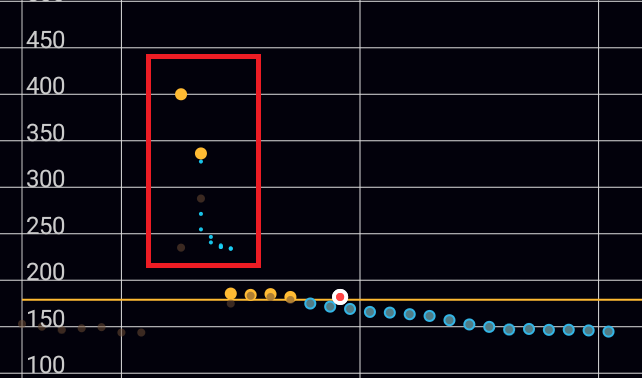
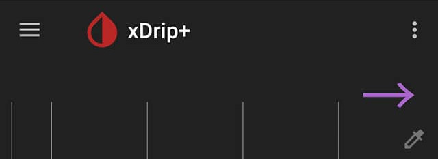

Start sensor
Starting a sensor in xDrip+ has very different functions depending on the sensor itself.
G5, G6 and 1⌁
Reference documentation is here.
G7 and 1+⌁
The sensor will start automatically at the time it is inserted. You don't need to start it in xDrip+.
Libre⌁
Note - this section does NOT apply to Libre 2/2+ (EU) connecting to xDrip+ without a bridge. For these, see the instructions for Libre 2 Direct
xDrip+ is not able to start a Libre sensor, neither is it to stop one (actually you can't stop this sensor: if it doesn't fail it will run it's useful lifetime and stop by itself after 14 days and 12 hours).
In order to start your sensor you need to use the vendor reader or app, some other third party apps like Glimp-S and eDropletNFC can start the Libre 1 sensor. Juggluco can start Libre 2 and 3 sensors.
xDrip+ sensor start is only used to track lifetime and make sure calibrations are updated. This operation is necessary and recommended each time you replace your sensor.

Start sensor
Confirm START SENSOR
 Start New Sensor
Start New Sensor
Do not hit start sensor unless the sensor is already embedded and the transmitter is connected
START SENSOR
If you inserted the sensor today (i.e. not started or recently started), answer YES, TODAY
Did you insert it today?
We need to know when the sensor was inserted to improve calculation accuracy.
NOT TODAY YES TODAY
If you answered today select the hour you physically started the sensor dragging the blue pointer to the correct time. With 12 hours display, tap am orpm. With 24 hours display drop the correct hour either on the inner or outer ring for the correct hour. Tap OK.

Drag the minutes blue pointer to the correct time and tap OK.

The newly started sensor will continue its warm-up if started from less than one hour.
Warning
Even if xDrip+ will attempt reading a sensor during its warm-up phase, values can range from unreliable to inconsistent and should not be used.

If you're using OOP1 or OOP2 without calibration, BG will start displaying immediately without need of the initial calibration.
If you're using an already started sensor you will have a calibration request within 15 minutes.
If you see a purple arrow you might have made a mistake in the date and time the sensor was started as BG data is available but won't display during the 1 hour warm-up.

xDrip+ will now wait for readings and update the progress. Stay on this screen. Every reading is done 5 minutes apart so it should take less than 20 minutes.
Collecting Initial Readings
✔ Data collector running
⧖ Receiving data from collector
Received some recent data
Received enough good data to calibrate
No data received yet
If the data source shows LimiTTer and you're not using an actual LimiTTer, your bridge device is not connected correctly.

The indication No data received yet will change to Need 3 recent readings. If no data is received, check your parameters.
Collecting Initial Readings
✔ Data collector running
✔ Receiving data from collector
✔ Received some recent data
⧖ Received enough good data to calibrate
Need 3 recent readings, got only one so far
Next reading expected in 1 minute
When enough readings are received, the calibration request will display. More about calibration here.
If your BG is within normal range (recommended in the lower normal range for a new sensor) and has been stable for the last 10 minutes, with no carbs not insulin active, you can calibrate.
If your BG is quickly varying or not within normal range, it is not recommended to calibrate now.
Calibrate Sensor?
We have some readings!
Next we need the first calibration blood test.
Ready to calibrate now?
Two readings are required from legacy G4 receiver, you can use only one if you're sure it's valid. Just put twice the same value. You can set one value as default disabling double calibration.
Your BG should start displaying on the main graph.
Followers and companion apps⌁
It it sometimes necessary to "start" a sensor session in xDrip+ to get readings.
Starting or stopping a sensor in xDrip+, when using a follower or companion source doesn't have any impact on the sensor.
Warning
The only exception is xDrip+ Sync follower that might transmit the Start or Stop command to the actual sensor if it is directly connected to xDrip+ acting as master.
Do not use Start and Stop sensor with xDrip+ Sync follower unless you know the person with the master xDrip+ phone will know what to do with a stopped sensor!
Start sensor
Confirm START SENSOR
Start New Sensor
Do not hit start sensor unless the sensor is already embedded and the transmitter is connected
START SENSOR
Answer NOT TODAY
Did you insert it today?
We need to know when the sensor was inserted to improve calculation accuracy.
NOT TODAY YES TODAY
xDrip+ should pick-up readings with the next measurement.